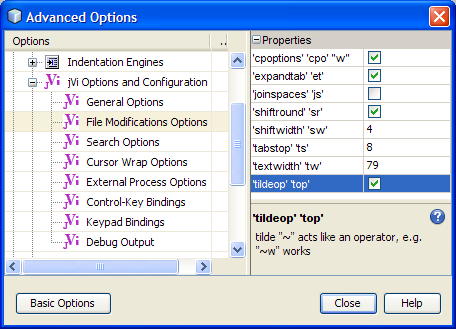
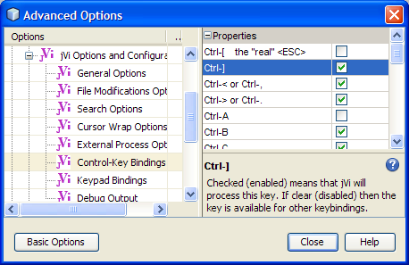

Now you can use vi/vim commands while taking advantage of the NetBeans editors' code completion, templates, fixing compiler errors quickly and access to other IDE features.
For proper undo/redo granularity there is a small patch for netbeans. NOTE: not needed for NetBeans 7.
The keystrokes that are delivered to jVi is a configuration option. See Key Bindings below.
Look at recent changes to jVi and jVi in NetBeans status, issues and bugs.
Disable/enable jVi using Main Menu Tools > jVi checkbox. There is also a toggle action that can be bound to a shortcut.
Log bugs at jVi Bug Tracking. Please include both the jVi version number and the NetBeans version number, e.g. NB5.5, when reporting problems. Get the version of jVi with the :version command, also the version of jVi in use is displayed on the jVi Options and Configuration editing option property page..
Discuss your issues, problems and/or requests at jVi Open Discussion Forum. This is a good way to indicate what you'd like to see in jVi for NetBeans. Communications can also be sent to jVi.
| Ctrl-] | Go To Declaration |
| m{.<>} | toggle bookmark, previous bookmark, next bookmark |
| z{ocRM} | expand fold, collapse fold, expand all, collapse all |
| g{,;} | Jump to Next Edit Cross Window, Jump to Previous Edit Cross Window |
| gt, gT | Go to the next/previous editor tab page. Wraps around from first to last. |
| :se[t] | See Colon Commands for information on available options. See Netbeans options information for platform interactions of the sw, et, ts, nu options. |
| :e#[<digit>] | After :e# code completion allows the selection of an open file. There is a jVi option ":e#" Auto popup. |
| :g/.../p, :g/.../s/.../p, :1,$s/.../p | The output of these commands go to an Output window with hyperlinks |
| :ls, :buffers, :files | The output of these commands go to an Output window |
| :n[ext], :N[ext], :prev[ious] | Operate on MRU file list, otherwise similar to vim. For example, :3N goes to the third previously file active |
| :q[uit], :wq[!] | Close the curernt tab. Return to the previously active tab; for example Ctrl-], Ctrl-], :q, :q gets you back to where you started. |
| :ts [<any-chars>],
:ta <any-chars> |
These bring up the "Go To Class" dialog. |
| :gr[ep] | perform "Find Usages" action on the identifier under the cursor. |
| :mak[e] <op> <target> |
<op> ::=
[ b[uild] | c[lean] | r[ebuild] | d[oc] | de[bug] | ru[n] ]
<target> ::= [ m[ain] | p[roject] | % ] for main-project current-project current-file. Default <op> is build, default <target> is main. So entering :mak is the same as :make build main. |
| :cn[ext] | Goto the next in the list. In addition to compiler errors, it applies to many lists; for example in the diff window and in the output area, such as Find Usages or "g/pattern/p". |
| :cp[revious], :cN[ext] | Goto the previous in the list. |
| :tabn[ext], :tabp[revious], :tabN[ext] | Go to the next/previous editor tab page. Wraps around from first to last. |
| :tog[gle] [<view-pane>] |
<view-pane> ::= bo[ttom] | ou[tput] | de[bug]
toggle some NetBeans' window(s) visibility. With no arguments is the same as bottom. output is the output mode; some windows that go here are Output and Usages. debug are the debug windows. bottom is both of output and debug. |
| :rfr[ename] | Refactor > Rename... |
| :rfm[ove] | Refactor > Move... |
| :rfc[opy] | Refactor > Copy... |
| :rfde[lete], :rfsa[fedelete] | Refactor > Safe Delete... |
| :rfch[angemethodparameters] | Refactor > Change Method Parameters... |
| :rfenc[apsulatefields] | Refactor > Encapsulate Fields... |
| :rfup, :rfpul[lup] | Refactor > Pull Up... |
| :rfdo[wn], :rfpus[hdown] | Refactor > Push Down... |
| :rfvar[iable] | Refactor > Introduce Variable... |
| :rfcon[stant] | Refactor > Introduce Constant... |
| :rffie[ld] | Refactor > Introduce Field... |
| :rfmet[hod] | Refactor > Introduce Method... |
| :run | Use :make run |
| :deb[ug] | Use :make debug |
 There are several options that control jVi's behavior. They can be found though NetBeans' Main Menu at Tools > Options > AdvancedOptions > Editing > jViOptionsAndConfiguration. Note that there are Sub Pages that contain jVi options as well. Most of these are well known vim options. If you click on an option name, a description of the option is displayed. The option names can generally be used in vim to get help if you want a more detailed description of what the option does.
:set options details. The options shiftwidth, expandtabs and tabstop are per file options, so that any editor clones of a given file have the same value for these options. Different files can have different values for these options. The values set through the GUI are the default values for the options, so setting the values in the GUI is like putting them in a .vimrc. Any modeline settings are applied after the GUI option values. Note that jVi changes the NetBeans values of these options to keep NetBeans in sync with the options of the file being edited. The number options should be per window, but netbeans applys it to all windows.
NetBeans options are shared where applicable. For example, there is only one IgnoreCase flag in the system. jVi shares this settings with NetBeans. If you change this option in one place, it is changed in the other. The only other fully shared option is wrapscan.
Autoindent and other such editor features are handled and configured through NetBeans.
 Keybindings that are not delivered to jVi are passed on to the next keymap in line. For example, jVi does not catch any key strokes that use the Alt key.
Configure the Keys that are caught by jVi though its Control-Key Bindings and Keypad Bindings options pages. If a key is not checked (disabled) then it can be used for NetBeans keybindings. For example, uncheck Ctrl-I and then this key brings up NetBeans' Override and Implement Methods dialog. And of course there's ^C, ^X and ^V. The Ctrl-J starts some pretty good NetBeans multi-key bindings.
You may want to bind the Find dialog to a keybinding other than Ctrl-F to get easy access to it. At least until jVi is hooked into incremental search and hilight.
There are options for controlling metacharacter escaping. By default vim requires that several RE metacharacters be escaped. For example '|' and '(', with the RE Meta Escape option you can specify which characters must be escaped. Check Searching and Patterns for information on searching and a description of the options. javadocs describe the pattern syntax.
Here is an example for adding a simple ":" command that takes no arguments. Refer to ColonCommands and its inner clases API for more info, such as handling line number and arguments as in :3,7 mycom arg arg. The source of the ActionEvent is the JEditorPane from where the command is executed. I haven't actully tried it, ColonCommands is in the jVi Core module.
import org.netbeans.modules.whatever;
import com.raelity.jvi.ColonCommands;
import org.netbeans.modules.jvi.Module;
class MyStuff {
private void registerJViCommands() {
ColonCommands.register("com", "command", whatever.someAction);
// Execute something out of the FileSystem, could be a SystemAction
ColonCommands.register("plat", "platform",
new Module.DelelgateFileSystemAction("org-what-ever.instance"));
}
}